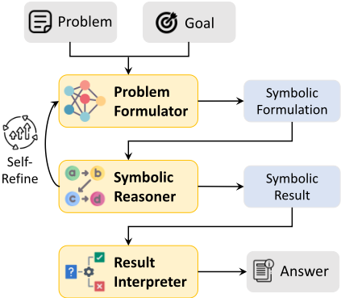
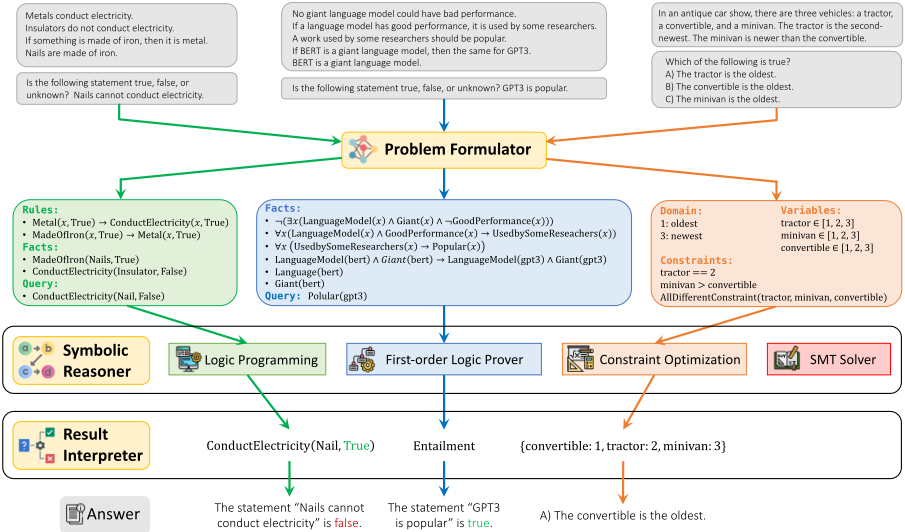
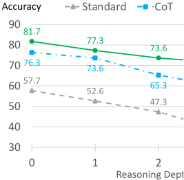
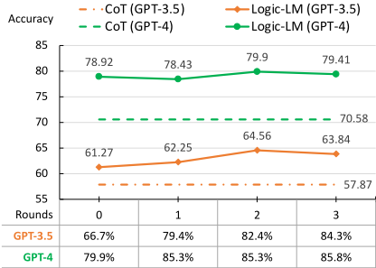

Logic-LM：用符号求解器赋能 LLM 实现忠实的逻辑推理
LLM 在复杂逻辑推理上常出现结论与推理链不一致的'不忠实推理'，CoT 无法从机制上保证正确性。LOGIC-LM 提出'问题形式化—符号推理—结果解释'三阶段框架：先用 LLM 通过 few-shot in-context learning 把自然语言问题翻译成四种符号表示之一（Logic Programming、FOL、CSP、SAT），再交给确定性求解器（Pyke、Prover9、python-constraint、Z3）执行推理，最后由规则或 LLM 把符号答案映射回自然语言；并引入 Self-Refiner，用求解器报错信息迭代修正符号形式化，不可执行时回退 CoT。在 ProofWriter、PrOntoQA、FOLIO、LogicalDeduction、AR-LSAT 五个数据集上，平均比 standard prompting 提升 39.2%、比 CoT 提升 18.4%，且推理深度越深优势越大（depth-5 上领先 CoT 39.4%）。对团队而言，它示范了'LLM 负责表示、确定性工具负责执行、报错驱动自修正'的可靠性工程范式。
LLM 在复杂逻辑推理上仍表现不佳，会产出'不忠实推理'（unfaithful reasoning），即结论并不遵循其先前生成的推理链；CoT 只是模仿人类推理过程，本质仍是黑盒概率模型，缺乏保证推理忠实性的机制。符号推理引擎忠实且透明，但难以直接处理模糊、灵活的自然语言。论文要解决的是如何让 LLM 与符号求解器优势互补：用 LLM 克服自然语言到符号表示的翻译障碍，用符号求解器保证推理的忠实性。
LOGIC-LM 采用'问题形式化与推理'范式，分三阶段： (1) Problem Formulator：通过 few-shot in-context learning（提供符号语言文法的详细说明与 1-5 个示例，采用 SYMBOLIC_FORMULA ::: NL_STATEMENT 对齐格式）让 LLM 把自然语言问题翻译为四种任务相关符号表示之一：Logic Programming（Prolog 风格的 facts/rules/query）、First-Order Logic、CSP（变量/域/约束）、SAT； (2) Symbolic Reasoner：调用确定性外部求解器执行推理——Pyke（前向/后向链逻辑编程）、Prover9（FOL 定理证明）、python-constraint（CSP 求解）、Z3（SMT/SAT 求解）； (3) Result Interpreter：用预定义规则或 LLM 把符号答案映射回自然语言答案。另设 Self-Refiner 模块：当求解器返回执行错误时，把错误的逻辑形式、求解器报错信息与常见错误案例及修法一起作为提示，让 LLM 迭代修正，直到无报错或达到最大修正轮数；对不可执行的样本回退到 CoT 预测答案。
在五个数据集上（GPT-3.5），LOGIC-LM 平均比 standard prompting 提升 39.2%，比 CoT 提升 18.4%
在 GPT-4 上，LOGIC-LM 相比 standard prompting 平均提升 24.98%，相比 CoT 提升 10.44%；GPT-4 standard prompting 本身比 GPT-3.5 平均高 48.46%
CoT 在 FOLIO、LogicalDeduction、AR-LSAT 上收益有限甚至为负（+11.75%、+9.41%、-3.2%），而 LOGIC-LM 相对 CoT 在这三个数据集上分别提升 +21.85%、+45.67%、+24.14%
符号形式可执行率（Exe_Rate）：PrOntoQA、ProofWriter、LogicalDeduction 接近 100%；真实世界专家编写的数据集上 GPT-4 在 FOLIO 为 79.9%、AR-LSAT 仅 32.6%
Self-refinement 平均将 Exe_Rate 提升 5.01；随精炼轮次（0-3 轮）增加 Exe_Rate 持续上升，但准确率在后续轮次趋于停滞
鲁棒性：在 ProofWriter 上随推理深度从 depth-0 到 depth-5，LOGIC-LM 相对 CoT 的优势从 7.1% 扩大到 39.4%（各深度为 7.1%、5.0%、12.7%、20.0%、39.4%），而 Standard 与 CoT 随复杂度上升性能急剧下降
与需要微调或手工设计专门模块的已有 neuro-symbolic 方法不同，LOGIC-LM 无需训练，仅靠 LLM 的 in-context learning 完成自动形式化，更具泛化性；与 CoT、least-to-most 等在自然语言上直接推理的方法不同，它把精确推理的负担从 LLM 卸载给更可靠、可解释的外部符号求解器，将 LLM 的任务从'逐步解题'转变为'表示问题'；论文还自称开创性地把 auto-formalization 概念从数学推理扩展到更广泛的逻辑推理任务，并把代码生成领域'用报错信息调试'的 self-refinement 思想扩展到逻辑表示的修正上。
相关度级别：high
命中能力域：3.2 提示工程 | 3.3 Agent 架构与工具使用 | 3.5 评测与可靠使用
理由：论文直接命中团队两个核心能力域：3.3 方面，它是一个完整的'LLM + 外部确定性工具'系统设计——把符号求解器作为工具调用、用工具报错信息驱动 self-refinement 反馈循环、设计执行失败时的 CoT 回退降级策略，正是团队构建工程自动化工具时保证单系统执行可靠性的核心模式；3.2 方面，其 Problem Formulator 完全依赖 ICL 提示设计（文法说明 + 少量示例 + ':::' 对齐格式）实现自然语言到形式语言的稳定翻译，是格式敏感提示工程的直接参考；3.5 方面，论文提出 Exe_Rate/Exe_Acc 双指标拆解'语法可执行'与'语义正确'，并系统分析推理深度、精炼轮次对可靠性的影响，为评测工具增强型 LLM 应用提供了可借鉴的量化方法。'LLM 负责表示、确定性工具负责执行'的分工范式可迁移到团队代码生成、测试辅助等需要精确性的场景。
建议动作：深入精读并做内部分享
arXiv:2305.12295v2 [cs.CL] 2023年10月19日
逻辑推理（logical reasoning）是一种认知过程，涉及运用证据、论证和逻辑来得出结论或做出判断（Huang and Chang, 2023）。它在智能系统的问题求解、决策制定和批判性思维中发挥着核心作用。近来，大语言模型（LLMs）（Brown et al., 2020; Ouyang et al., 2022a; OpenAI, 2023）已展现出像人类一样“推理”的涌现能力（Wei et al., 2022a）。当通过逐步的推理解释（“思维链”（chain-of-thought, CoT））或简单的提示语"Let's think step by step."进行提示时，这些模型能够以显式的推理步骤回答问题（Wei et al., 2022b; Kojima et al., 2022）。
1 代码和数据已在 https://github. com/teacherpeterpan/Logic-LLM 公开提供。

尽管 LLMs 取得了诸多进展，它们在复杂的逻辑推理问题上仍然力不从心（Liu et al., 2023b）。近期研究（Golovneva et al., 2023; Ribeiro et al., 2023b; Lyu et al., 2023）发现，LLMs 偶尔会做出不忠实的推理（unfaithful reasoning），即推导出的结论并不遵循先前生成的推理链。虽然思维链可以模仿人类的推理过程，但 LLMs 的根本属性仍然是黑盒概率模型，缺乏保证推理忠实性的机制（Shanahan, 2022）。相比之下，符号推理引擎（symbolic inference engines），例如专家系统（Metaxiotis et al., 2002），则是忠实且透明的，因为其推理基于以符号表示的知识，并遵循符合逻辑原则的明确定义的推理规则。主要障碍在于，考虑到自然语言固有的模糊性与灵活性，如何将问题准确地转化为符号表示。而这恰恰是 LLMs 所擅长的，这使得 LLMs 成为符号求解器（symbolic solvers）颇具前景的补充。
这促使我们探索将大语言模型（LLM）与符号推理相结合的神经符号（neuro-symbolic）方法。如图 1 所示，我们提出了 LOGIC-LM，这是一种新颖的框架，它将逻辑推理问题分解为三个阶段：问题形式化（Problem Formulation）、符号推理（Symbolic Reasoning）和结果解释（Result Interpretation）。在问题形式化阶段，LLM 将问题的自然语言描述转换为恰当的符号形式化表示，识别问题陈述中存在的关键实体、事实和规则。随后，在符号推理阶段，由确定性的符号求解器对该符号形式化表示执行推理。最后，由结果解释器对输出进行解释，并将其映射为正确答案。通过将 LLM 与符号求解器相结合，我们既能利用 LLM 强大的自然语言理解能力，以符号表示精确地表达问题，又能借助符号求解器所提供的逻辑忠实性与透明性。为了提高符号解析的准确性，我们还引入了自我精炼（self-refinement）的思想，即以符号求解器返回的错误信息作为反馈，迭代地修正所生成的逻辑形式。
我们在五个逻辑推理数据集上展示了 LOGIC-LM 的适应性与有效性：ProofWriter（Tafjord et al., 2021）、PrOntoQA（Saparov and He, 2023）、FOLIO（Han et al., 2022）、AR-LSAT（Zhong et al., 2022），以及来自 BigBench 的 LogicalDeduction 数据集（Srivastava et al., 2022）。这些数据集涵盖了广泛的逻辑推理问题，包括：
我们集成了四类针对这些问题量身定制的符号推理工具：1）逻辑程序设计引擎（logic programming engine），通过前向/后向链接（forward/backward chaining）支持演绎推理；2）一阶逻辑（FOL）推理引擎，基于 FOL 规则和事实推导新的结论；3）约束优化引擎（constraint optimization engine），为有限域上的约束满足问题（CSP）提供求解器；4）布尔可满足性问题（SAT）求解器，用于求解分析推理问题。
我们的评估表明，将 LLM 与符号求解器相结合的策略在逻辑推理上的表现显著优于单纯依赖 LLM，相比标准提示（standard prompting）平均提升 39.2%，相比思维链（CoT）提示提升 18.4%（§ 4.1）。我们还发现，随着所需推理深度的增加，LOGIC-LM 变得越来越有效（§ 4.3）。最后，通过分析自我精炼的影响，我们强调了在与符号求解器交互时逐步修正符号形式化表示的有效性（§ 4.4）。
面向逻辑推理的语言模型。将大语言模型（LLM）适配到逻辑推理任务的近期工作大致可分为两类：1）微调方法，通过微调或训练专用模块来优化 LLM 的推理能力（Clark et al., 2020; Tafjord et al., 2022; Yang et al., 2022）；2）上下文学习（in-context learning）方法，通过设计特殊提示来激发 LLM 的逐步推理能力。典型方法包括思维链（chain-of-thought, CoT）提示（Wei et al., 2022b; Wang et al., 2023），其在给出最终答案之前先生成解释；以及最小到最大提示（least-to-most prompting）（Zhou et al., 2023），其将问题分解为可单独求解的更简单的组成部分。上述两类方法都直接在自然语言（NL）上进行推理，相比基于符号的推理提供了更大的灵活性。然而，NL 固有的复杂性和歧义性也带来了诸如推理不忠实和幻觉等不良问题。
与以往工作不同，我们使用符号语言作为推理的基本单元。这将执行复杂且精确推理的负担有效地从 LLM 转移到更可靠、更可解释的外部符号求解器上。同时，我们利用 LLM 强大的上下文学习能力，将基于 NL 的问题形式化为合适的符号表示，从而保持了灵活性方面的优势。
尽管以往工作（Mao et al., 2019; Gupta et al., 2020; Manhaeve et al., 2021; Cai et al., 2021; Tian et al., 2022; Pryor et al., 2023）也提出了将神经网络与符号推理相结合的神经符号（neuro-symbolic）方法，但这些方法存在诸如手工设计或专用模块设计难以泛化，或因优化困难而导致脆弱性等局限。相比之下，我们提出了一个更具泛化性的框架，将现代 LLM 与符号逻辑相集成，而无需训练或设计复杂的针对特定问题的模块。
工具增强的语言模型（Tool-augmented Language Models）。语言模型存在固有的局限性，例如无法获取最新信息、无法采取行动，也无法进行精确的数学推理。为解决这一问题，近期的研究开始通过让语言模型访问外部工具和资源来对其进行增强，例如信息检索器 (Nakano et al., 2021; Shi et al., 2023; Lazaridou et al., 2022)、计算器 (Cobbe et al., 2021)、代码解释器 (Wang et al., 2022)、规划器 (Liu et al., 2023a) 以及其他预训练模型 (Shen et al., 2023)。近期的工作 (Gao et al., 2023; Chen et al., 2022) 通过生成 Python 程序、将推理过程指定为按执行顺序串联的命令，在算术推理任务上取得了性能提升。然而，这一思路尚未被扩展到逻辑推理问题，其主要难点在于难以用函数式编程表示逻辑推理高度“非线性”的推理过程（例如，提出假设、逐情况分析以及排除法）。我们的工作在增强 LLM 的框架内提供了一种解决该问题的新途径：我们不再将问题求解过程解析为程序，而是仅利用 LLM 以符号语言描述问题，随后将推理交由外部符号求解器完成。

自动形式化（Auto-Formalization）。将自然语言转换为符号表示这一概念，已在面向数学推理的自动形式化（auto-formalization）中得到广泛采用 (Wu et al., 2022; Drori et al., 2022; He-Yueya et al., 2023; Jiang et al., 2023)。这些工作表明，LLM 能够熟练地将相当一部分数学问题翻译为以 SymPy (Meurer et al., 2017)、Isabelle/HOL (Paulson, 1994) 和 Lean (de Moura et al., 2015) 等工具定义的形式化规范。数学推理可以被视为逻辑推理的一个专门子集，主要关注数值推导。由于这种数值上的特殊性，数学问题通常更容易转换为符号形式。相比之下，逻辑推理涵盖的问题类型更为广泛，往往需要对世界知识和常识有更深入的理解，才能有效地解析为符号形式。尽管已有大量工作研究数学推理，我们的工作率先借助现代 LLM 将自动形式化的概念扩展到更广泛的逻辑推理任务。
如图 2 所示，我们模型的输入是一个以自然语言描述的逻辑推理问题 P，以及一个以多选题或自由形式问题给出的目标 G。随后，LOGIC-LM 遵循“问题形式化与推理”（problem formulation-and-reasoning）的范式来解决该问题。
在问题形式化（Problem Formulation）阶段，我们提示大语言模型（LLM）将问题和目标翻译成特定任务的符号语言。在符号推理（Symbolic Reasoning）阶段，我们调用一个确定性的符号求解器，例如逻辑编程引擎，以获得以符号形式表示的答案。最后，由基于 LLM 或规则的结果解释器（Result Interpreter）负责将答案翻译回自然语言。采用这种方法，只要问题形式化是正确的，推理即可保证是忠实的，因为答案 A 是执行嵌入在符号推理器中的确定性算法（例如 forward/backward-chaining）的结果。与以往基于思维链（CoT）的方法相比，我们的框架将 LLM 的关注点从“通过逐步推理来解决问题”转移到“用符号语言表示问题”，从而减轻了 LLM 的负担。
直观上，大语言模型（LLM）可能难以直接求解复杂的推理问题。然而，它们在理解文本输入并将其转化为形式化程序方面已展现出显著的能力，例如转化为数学方程（He-Yueya et al., 2023）或 Python 代码（Gao et al., 2023）。我们认为，这种将问题表述为不同语言的能力同样可以扩展到符号语言。我们利用 LLM 的少样本泛化能力来实现这一点。通过向 LLM 提供关于符号语言语法的详细指令，并辅以若干作为上下文示例（in-context examples）的演示，我们观察到，诸如 InstructGPT（Ouyang et al., 2022b）和 GPT-4（OpenAI, 2023）等 LLM 能够有效地遵循指令，识别问题陈述中存在的关键实体、事实和规则，然后按照我们定义的语法将这些元素翻译为符号语言。
具体而言，我们使用四种不同的符号形式化方法来涵盖四种常见的逻辑推理问题类型：演绎推理（deductive reasoning）、一阶逻辑推理（first-order logic reasoning）、约束满足问题（constraint satisfaction problem）和分析推理（analytical reasoning）。这些形式化方法为翻译基于自然语言的问题陈述提供了基础。通过定义额外的针对特定问题的形式化方法，我们的框架保留了灵活性，能够适应更广泛的推理任务。接下来，我们将深入探讨每种符号形式化方法的语法。各类问题类型的示例见图 2。
逻辑编程（Logic Programming, LP）语言。演绎推理通常从已知的事实和规则出发，迭代地做出新的推断，直到目标陈述能够被证明或被证伪（Poole and Mackworth, 2010）。Prolog 逻辑编程语言（Clocksin and Mellish, 2003; Körner et al., 2022）可以说是描述演绎推理问题最突出的符号语言。我们采用其语法将问题表示为事实、规则和查询。
一阶逻辑（First-Order Logic, FOL）。虽然逻辑编程语言能够高效地表示常见的演绎推理问题，但它可能无法表示更复杂的一阶逻辑（FOL）问题。为解决这一问题，我们还在附录 A 中纳入了 FOL 语法（Enderton, 2001）。随后，问题被解析为一个 FOL 公式列表，这些公式被划分为前提（Premises，即来自问题的已知信息）和结论（Conclusion，即待证明的未知公式）。表 1 给出了一个示例句子及其对应的 FOL 公式。
约束满足（CSP）。约束满足问题（CSP）（Kumar, 1992）旨在找到满足若干约束的一组对象的取值赋值。一个 CSP 通常被定义为一个三元组 ( X,D,C )，其中 X = { x 1 , · · · , x n } 是变量集合，D = { D 1 , · · · , D n } 是它们各自值域的集合，C = { C 1 , · · · , C m } 是约束集合。每个变量 x i 可以取非空域 D i 中的值。每个约束 C j 是一个二元组 ⟨ t j , R j ⟩，其中 t j ⊂ X 是由 k 个变量组成的子集，R j 是在相应域子集 D j 上的 k 元关系。我们使用上述语法将 CSP 问题定义为变量、域和约束。图 2 和表 1 中均给出了一个示例。
̸
| Problem.Problem | Formulation.Formulation | Example.NL Sentence | Example.Symbolic Formulation | Solver. | Dataset. |
|---|---|---|---|---|---|
| Deductive Reasoning | LP | If the circuit is complete and the circuit has the light bulb then the light bulb is glowing. | Complete(Circuit, True) ∧ Has(Circuit, LightBulb) → Glowing(LightBulb, True) | Pyke | ProntoQA, ProofWriter |
| First-Order Logic | FOL | A Czech person wrote a book in 1946. | ∃ x 2 ∃ x 1 ( Czech ( x 1 ) ∧ Author ( x 2 ,x 1 ) ∧ Book ( x 2 ) ∧ Publish ( x 2 , 1946)) | Prover9 | FOLIO |
| Constraint Satisfaction | CSP | On a shelf, there are five books. The blue book is to the right of the yellow book. | blue_book ∈ { 1 , 2 , 3 , 4 , 5 } yellow_book ∈ { 1 , 2 , 3 , 4 , 5 } blue_book > yellow_book | python- constraint | LogicalDeduction |
| Analytical Reasoning | SAT | Xena and exactly three other technicians repair radios | repairs(Xena, radios) ∧ Count([t:technicians], t = Xena ∧ repairs(t, radios))) == 3) | Z3 | AR-LSAT |
| Problem.Problem | Formulation.Formulation | Example.NL Sentence | Example.Symbolic Formulation | Solver. | Dataset. |
布尔可满足性（SAT）形式化。SAT 是判定是否存在对布尔公式变量的一种赋值、使得该公式得到满足的问题。许多分析推理问题都可以被形式化为 SAT 问题。我们采用 Ye et al. (2023) 中定义的语法，将 SAT 问题 P 形式化为 (Φ , T , Q )，其中 Φ 是在理论 T 下定义的一组约束，Q 是所关注的查询。
表 1 总结了四类逻辑推理问题、它们各自的典型数据集，以及用于表示每类问题的符号形式化。我们还针对每种类型给出了一个自然语言陈述及其对应符号形式化的示例。附录 C 展示了我们用于问题形式化器的完整提示。为了教会 LLM 更好地将每条陈述与其对应的符号形式对齐，我们在上下文示例（in-context examples）中使用 SYMBOLIC_FORMULA ::: NL_STATEMENT 的格式，以实现更好的接地（grounding）。
在问题形式化器将问题 P 和目标 G 解析为符号表示 ˆP 和 ˆG 之后，我们根据任务调用确定性的外部求解器，以获得答案 A。表 1 总结了我们针对每类逻辑推理问题所使用的符号求解器。
LP 系统。对于演绎推理，我们采用了 Pyke 专家系统（Frederiksen, 2008），该系统基于逻辑编程语言进行推理。在响应查询时，Pyke 首先创建一个知识库，并向其中填充已知的事实和规则。随后，它应用前向链和后向链算法来推断新的事实并证实目标。
FOL 证明器。我们使用 Prover9 2 作为 FOL 推理引擎。Prover9 是一个支持一阶逻辑和等式逻辑的自动定理证明器。它首先将 FOL 语句转换为合取范式（CNF），然后在 CNF 上执行归结（Robinson, 1965），以推断结论为真、为假还是未知。
CSP 求解器。求解 CSP 就是为所有变量找到满足所有给定约束的取值。该任务的常用算法包括回溯、约束传播以及局部搜索的各种变体。为此，我们采用了 python-constraint 3 包，它提供了针对有限域上 CSP 的求解器。
SAT 求解器。对于求解 SAT 问题，我们使用 Z3 定理证明器（de Moura and Bjørner, 2008），它是由 Microsoft 4 开发的可满足性模理论（SMT）求解器。SMT 求解器提供用于判定一组数学公式是否可满足的算法。它将 SAT 问题泛化为涉及实数、整数以及列表、数组、位向量和字符串等各种数据结构的更复杂公式。许多现实世界中的分析推理问题都可以表示为求解方程组的问题。
对于复杂问题，让大语言模型（LLM）生成正确的逻辑形式可能颇具挑战性。为解决这一问题，我们引入了一个自我修正（self-refinement）模块，该模块以符号推理器返回的错误信息作为反馈，学习修改不准确的逻辑表述。近期的一些工作（Chen et al., 2023; Madaan et al., 2023）采用了类似的思想来改进代码生成，即通过少样本（few-shot）示例教会 LLM 调试其预测的程序。在此，我们将这一思想扩展用于修正生成的逻辑表示。如果符号求解器返回执行错误，我们会指示 LLM 修正错误的逻辑形式，具体做法是向其提供如下提示：错误的逻辑形式、求解器的错误信息，以及一组展示常见错误案例（例如，一阶逻辑（FOL）中的自由变量未被任何量词约束）及其解决方法的示例。我们以迭代方式运行这一过程，直到不再返回错误信息，或达到允许的最大修订次数为止。
2 https://www.cs.unm.edu/~mccune/prover9/
3 https://github.com/python-constraint/ python-constraint
4 https://github.com/Z3Prover/z3
最后，结果解释器（result interpreter）将符号求解器返回的结果转换回自然语言答案。对于某些问题，这可以通过预定义的规则来实现；例如，将 Entailment 映射为 true。然而，对于 CSP 而言，这一过程可能更为复杂，例如，需要将 {convertible: 1, tractor: 2, minivan: 3} 转换为 'the convertible is the oldest.'。为了应对这些不同复杂程度的任务，我们同时设计了基于规则和基于 LLM 的两种结果解释器。结果解释器的详细信息见附录 D。
数据集。我们在五个常见的逻辑推理数据集上评估 LOGIC-LM，具体如下。
PrOntoQA (Saparov and He, 2023) 是一个新近提出的合成数据集，旨在分析大语言模型（LLM）的演绎推理能力。根据 Saparov and He (2023) 中的结果，我们使用该数据集中最难的虚构角色版本。每个版本根据所需推理跳数的不同被划分为不同的子集。我们使用最难的 5 跳子集进行评估。PrOntoQA 中的每个问题旨在验证一个新事实的真实性，例如 'True or false: Alex is not shy.'。
ProofWriter (Tafjord et al., 2021) 是另一个常用于演绎逻辑推理的数据集。与 PrOntoQA 相比，其问题以更接近自然语言的形式表达。我们使用开放世界假设（OWA）子集，其中每个样本是一个 (problem, goal) 对，标签为 { PROVED , DISPROVED , UNKNOWN } 之一。该数据集被划分为五个部分，分别需要 0、≤ 1、≤ 2、≤ 3 和 ≤ 5 跳推理。我们评估最难的 depth-5 子集。为降低总体实验成本，我们从测试集中随机抽取 600 个样本，并确保标签分布均衡。
FOLIO (Han et al., 2022) 是一个由专家撰写的、具有挑战性的逻辑推理数据集。其问题大多与现实世界知识相符，用词高度自然，且问题需要复杂的一阶逻辑推理才能求解。我们使用完整的 FOLIO 测试集进行评估，共包含 204 个样本。
LogicalDeduction 是来自 BigBench (Srivastava et al., 2022) 协作基准测试（benchmark）中的一项具有挑战性的逻辑推理任务。其问题大多是关于从最少的一组条件中推导出一系列对象的顺序。我们使用由 300 个样本组成的完整测试集。
AR-LSAT (Zhong et al., 2022) 是一个收集了 1991 年至 2016 年法学院入学考试（Law School Admission Test）中全部分析逻辑推理题目的数据集。我们使用的测试集包含 231 道多项选择题。AR-LSAT 尤其具有挑战性，最先进的模型也只能取得仅略好于随机猜测的性能 (Liang et al., 2022; Ribeiro et al., 2023a)。
我们将所有样本转换为标准的多项选择题格式，其中包含问题描述、问题和候选答案，如图 2 所示。我们还从每个数据集的训练集中选取 1-5 个样本作为上下文学习（in-context learning）示例。详细的数据统计见附录 B。
基线方法。我们将我们的模型与两种仅依赖 LLM 进行逻辑推理的基线方法进行比较：1）标准 LLM，其利用上下文学习（in-context learning）直接回答问题；2）思维链（Chain-of-Thought, CoT）（Wei et al., 2022b），其采用逐步求解的方式，在给出最终答案之前先生成解释。我们分别评估了 ChatGPT（gpt-3.5-turbo）、GPT-3.5（text-davinci-003）（Ouyang et al., 2022a）和 GPT-4（gpt-4）（OpenAI, 2023）作为所有模型底层 LLM 的设置。为确保公平比较，我们对所有模型使用相同的上下文示例。为获得可复现的结果，我们将温度设为 0，并从 LLM 中选择概率最高的响应。由于所有示例均以多项选择题的形式构成，我们基于选择正确答案的准确率来评估模型性能。
| Dataset.Dataset | ChatGPT (gpt-3.5-turbo).Standard | ChatGPT (gpt-3.5-turbo).CoT | ChatGPT (gpt-3.5-turbo).Logic-LM | GPT-3.5 (text-davinci-003).Standard | GPT-3.5 (text-davinci-003).CoT | GPT-3.5 (text-davinci-003).Logic-LM | GPT-4 ( gpt-4 ).Standard | GPT-4 ( gpt-4 ).CoT | GPT-4 ( gpt-4 ).Logic-LM |
|---|---|---|---|---|---|---|---|---|---|
| PrOntoQA | 47.4 | 67.8 | 61 | 51.8 | 83 | 85 | 77.4 | 98.79 | 83.2 |
| ProofWriter | 35.5 | 49.17 | 58.33 | 36.16 | 48.33 | 71.45 | 52.67 | 68.11 | 79.66 |
| FOLIO | 45.09 | 57.35 | 62.74 | 54.6 | 57.84 | 61.27 | 69.11 | 70.58 | 78.92 |
| LogicalDeduction | 40 | 42.33 | 65.67 | 41.33 | 48.33 | 62 | 71.33 | 75.25 | 87.63 |
| AR-LSAT | 20.34 | 17.31 | 26.41 | 22.51 | 22.51 | 25.54 | 33.33 | 35.06 | 43.04 |
| Dataset.Dataset | ChatGPT (gpt-3.5-turbo).Standard | ChatGPT (gpt-3.5-turbo).CoT | ChatGPT (gpt-3.5-turbo).Logic-LM | GPT-3.5 (text-davinci-003).Standard | GPT-3.5 (text-davinci-003).CoT | GPT-3.5 (text-davinci-003).Logic-LM | GPT-4 ( gpt-4 ).Standard | GPT-4 ( gpt-4 ).CoT | GPT-4 ( gpt-4 ).Logic-LM |
We report the results of LOGIC-LM ( without selfrefinement) and baselines in Table 2. For LOGICLM, a symbolic solver does not return an answer when there are grammar errors in the symbolic formulation. For these un-executable cases, we fall back on using chain-of-thought to predict the answer. We have three major observations.
1. Logic-LM significantly outperforms standard LLMs and CoT across all datasets. With GPT3.5, our method outperforms standard LLM on all datasets, with an average improvement of 39.2%. This highlights the benefit of combining LLMs with external symbolic solvers for logical reasoning. LOGIC-LM also improves CoT by a large margin of 18.4% on average, showing that offloading the reasoning to symbolic solvers greatly improves faithfulness compared with pure language-based reasoning with CoT.
2. GPT-4 outperforms GPT-3.5 by a large margin
of 48.46% on average for the standard prompting.
This aligns with the assertion that the main enhancement of GPT-4 lies in its ability to carry out complex reasoning (OpenAI, 2023). Although this may indicate that the logical reasoning capability can be boosted by scaling up the LLM, we observe that GPT-4 still makes numerous unfaithful reasoning errors. By delegating the reasoning to symbolic solvers, our method can further improve GPT-4 by an average of 24.98% and 10.44% for standard prompting and CoT prompting, respectively.
3. While integrating CoT generally enhances LLM performance, we find its benefits comparatively less substantial or even negative on FOLIO, LogicalDeduction, and AR-LSAT, with a modest improvement of 11.75%, 9.41%, and -3.2%, respectively. On the contrary, the benefits of CoT on ProntoQA and ProofWriter are 51.59% and 33.82%, respectively. A plausible explanation is that CoT emulates human forward-chain reasoning: beginning with known facts and sequentially deriving new conclusions until the goal is met. This reasoning style aligns well with problems in the PrOntoQA and ProofWriter datasets. However, FOL and CSP problems often necessitate more sophisticated reasoning strategies that are 'nonlinear' compared to standard forward-chain reasoning. These include hypothesizing, conditioning, recursive inference, and the process of elimination. Compared to CoT, the integration of symbolic solvers is better suited to these reasoning styles, hence yielding a more marked improvement on FOLIO (+21.85%), LogicalDeduction (+45.67%), and AR-LSAT (+24.14%).
| Dataset.Dataset | SR.SR | GPT-3.5.Exe_Rate | GPT-3.5.Exe_Acc | GPT-4.Exe_Rate | GPT-4.Exe_Acc |
|---|---|---|---|---|---|
| ProntoQA | - + | 99.4% 100.0% ↑ 0.6 | 84.9 85.0 ↑ 0.1 | 100.0% 100.0% | 83.2 83.2 |
| ProofWriter | - + | 87.3% 95.6% ↑ 8.3 | 73.6 74.1 ↑ 0.5 | 99.0% 99.0% | 79.6 79.6 |
| FOLIO | - + | 66.7% 84.3% ↑ 17.6 | 61.8 64.3 ↑ 2.5 | 79.9% 85.8% ↑ 5.9 | 80.4 79.9 ↓ 0.5 |
| Logical Deduction | - + | 100.0% 100.0% | 62.0 62.0 | 100.0% 100.0% | 87.6 87.6 |
| AR-LSAT | - | 11.3% | 57.7 | 32.6% | 60.0 |
| + | 21.8% ↑ 10.5 | 60.3 ↑ 2.6 | 39.8% ↑ 7.2 | 58.8 ↓ 1.2 |
| Dataset.Dataset | SR.SR | GPT-3.5.Exe_Rate | GPT-3.5.Exe_Acc | GPT-4.Exe_Rate | GPT-4.Exe_Acc |
随后，我们评估了大语言模型（LLM）将给定问题翻译为各符号求解器所使用的符号形式的能力。在表 3 中，我们报告了 Logic-LM 所生成的符号形式能够被相应符号求解器执行的比例

71.3
71.1
59.4
38.3
51
33.5
5
（按各数据集分别统计，记为 Exe_Rate）。总体而言，LLM 在将问题转写为符号格式方面展现出很高的熟练度，其在 ProntoQA、ProofWriter 和 LogicalDeduction 上接近 100% 的 Exe_Rate 便是佐证。然而，模型在这些数据集上的高表现在一定程度上是可以预见的，因为其问题大多为合成生成，语言多样性受限。而对于由真实世界中专家精心编制的问题所构成的数据集，例如 FOLIO 和 AR-LSAT，GPT4 的表现则明显不够理想，Exe_Rate 分别仅为 79.9% 和 32.6%。这一差距凸显了将真实世界问题转换为其逻辑等价形式所固有的挑战。
Exe_Rate 仅反映逻辑形式的语法正确性。我们还报告了可执行样本的准确率（Exe_Acc），以衡量语义正确性。我们发现，GPT-4 生成的逻辑形式通常能达到较高的 Exe_Acc，即便在最具挑战性的 AR-LSAT 数据集上也是如此。这样的表现进一步凸显了符号求解器在增强模型逻辑推理能力方面的潜力，但这有赖于将问题精确地翻译为符号形式。
引入符号求解器还能带来更稳健的推理。为了说明这一点，我们报告了 LOGIC-LM 与各基线方法在不同复杂度级别问题上的性能表现。我们从 ProofWriter 的每个子集中随机选取了 300 个样本，以确保标签分布均衡。这些子集中的问题分别需要 0、<=1、<=2、<=3 和 <=5 跳的推理。图 3 所示的结果表明，随着所需推理深度的增加，LOGIC-LM 的效果愈发显著。例如，在深度为 0、1、2、4 和 5 的问题上，LOGIC-LM 分别以 7.1%、5.0%、12.7%、20.0% 和 39.4% 的优势领先于思维链（CoT）。在 LOGIC-LM 中，多步逻辑推理被委托给外部符号求解器，从而将大语言模型（LLM）所面临的挑战从问题求解转变为问题表示。理想情况下，无论问题需要简单推理还是复杂推理，将问题描述形式化地表示为逻辑形式这一任务的复杂度都应保持相对恒定。图 3 中的趋势验证了这一假设。随着问题复杂度的不断升级，Standard 和 CoT 的性能急剧下降。然而，这一趋势在 LOGIC-LM 上并不那么突出，这表明外部求解器所提供的稳健推理能力能够大幅缓解复杂推理问题带来的性能下降。

在图5中，我们展示了GPT-4生成的符号表示示例及其预测的答案。总体而言，LOGIC-LM展现出了将复杂问题解读为符号形式的强大能力。然而，在准确理解问题语义方面仍存在一定的困难。
我们在附录E的图6中进一步分析了一些错误案例。示例1展示了GPT-4生成错误一阶逻辑（FOL）表示的案例，其根源在于模型无法定义合适的谓词。在这里，模型没有创建谓词 EasternWildTurkey，而是生成了一个常量 WildTurkey(eastern)，其中 WildTurkey 是谓词，eastern 是常量。尽管这种表示单独来看是有效的，但它无法与后续的常量良好地交互。这种不一致性是GPT-4符号形式生成中反复出现的问题，表明模型在构建逻辑符号时有时难以保持对问题的整体理解。示例3突出了GPT-4难以准确解读特定表达式的案例。在该案例中，模型未能区分“below”和“above”的含义，导致了错误的约束 Dan > Eve。示例4例证了GPT-4在完全掌握FOL语法规则方面的挑战，其生成的无效公式即为佐证：Rating(subway, y) ∧ y > 9。这些错误案例凸显出，由于FOL公式化的复杂性、自然语言固有的灵活性以及全局问题理解的复杂性，将问题转换为逻辑形式对现代大语言模型（LLM）而言仍然是一项具有挑战性的任务。
在本工作中，我们提出了一种将大语言模型与符号求解器相结合来解决逻辑推理问题的新方法。我们介绍了 Logic-LM——该框架的一个具体实例，并展示了其性能如何显著超越纯 LLM 以及思维链（chain-of-thought, CoT）提示技术。
尽管 Logic-LM 已被证明是一个能力出色的系统，但通过扩展至更灵活、更强大的逻辑系统，它仍有进一步提升的空间。例如，统计关系学习（statistical relational learning, SRL）系统，如马尔可夫逻辑网络（Markov logic networks）(Richardson and Domingos, 2006) 和概率软逻辑（probabilistic soft logic）(Bach et al., 2017)，已在不确定性推理方面展现出巨大前景，将其与我们的框架集成将带来更具适应性的问题求解能力。此外，我们的方法还可扩展至需要常识的推理问题，而这类问题通常需要对复杂且模糊的规则进行推理，因此仍然是一项重大挑战。
我们指出了 LOGIC-LM 的两个主要局限性。首先，LOGIC-LM 依赖于将推理问题转化为可由符号求解器（symbolic solver）处理的逻辑格式。因此，模型的适用性本质上受限于符号求解器的表达能力，例如，并非所有问题都能被轻松地编码为一阶逻辑（first-order logic）。尽管如此，这一局限性可以通过集成更加多样化的符号求解器集合来缓解。LOGIC-LM 灵活的设计便于这种集成。我们能够在广泛的推理任务上实例化 LOGIC-LM 框架，这表明了其普遍适用性。
其次，LOGIC-LM 依赖于上下文学习（in-context learning）结合自我修正（self-refinement）来将自然语言（NL）问题转换为符号表示。虽然这种方法已被证明是有效的，但在处理具有复杂语法结构的逻辑表示（例如概率软逻辑）时，它可能会遇到困难。这是由于在受限的上下文大小内，难以通过数量有限的示例向语言模型传达复杂的语法规则。作为一种潜在的解决方案，未来的工作可以探索开发专门的模块来增强 NL 与符号语言之间的映射，例如，利用符号求解器生成的合成数据对大语言模型（LLMs）进行微调。
大语言模型（LLM）的使用在训练阶段需要大量的计算能耗，这会加剧全球变暖（Strubell et al., 2019）。我们的工作采用的是少样本上下文学习（few-shot in-context learning），而非从零开始训练模型，因此本工作的能源足迹较小。我们通过 API 调用用于推理的大语言模型，尤其是 GPT-4，会消耗大量能源。
| Name | FOL Notation |
|---|---|
| Constant | lowercase letters |
| Variable | x , y , z , · · · |
| Atom | P ( a 1 , · · · ,a n ) |
| Negation | ¬ P |
| Conjunction | P 1 ∧ P 2 P 1 ∧ , · · · , ∧ P n |
| Disjunction | P 1 ∨ P 2 P 1 ∨ , · · · , ∨ P n |
| Implication | P 1 → P 2 |
| Equivalence | P 1 ↔ P 2 |
| Existential Quantifier | ∃ xP ( x, · · · ) |
| Universal Quantifier | ∀ xP ( x, · · · ) |
| Name | FOL Notation |
| Dataset | Reasoning | Test Size | #Opts |
|---|---|---|---|
| PrOntoQA | Deductive | 500 | 2 |
| ProofWriter | Deductive | 600 | 3 |
| FOLIO | FOL | 204 | 3 |
| LogicalDeduction | CSP | 300 | 3,5,7 |
| AR-LSAT | AR | 230 | 5 |
| Dataset | Reasoning | Test Size | #Opts |
在本节中，我们给出针对每个数据集和方法所使用的提示（prompt）示例。标准上下文学习（in-context learning）的提示词包含 2 个示例（demonstration），每个示例由 3 部分组成：上下文、问题和选项。用于思维链（chain-of-thought, CoT）提示的提示词包含 2 个示例，每个示例由 5 部分组成：任务描述、上下文、问题、选项以及推理链。LogicLM 的提示词包含 2 个示例，每个示例有 5 部分：任务描述、上下文、问题、选项以及领域特定的符号程序。为简洁起见，我们在以下各节中仅展示每种设置的单个示例。
上下文：Jompuses 不是害羞的。Jompuses 是 yumpuses。（ · · · 此处为更多上下文 · · · ）Zumpuses 是 rompuses。Max 是一个 yumpus。问题：以下陈述是正确还是错误？Max 是酸的。选项：A) 正确 B) 错误 正确选项是：B
任务描述：给定一个作为上下文的问题陈述，任务是回答一个逻辑推理问题。上下文：Jompuses 不是害羞的。Jompuses 是 yumpuses。（ · · · 此处为更多上下文 · · · ）Zumpuses 是 rompuses。Max 是一个 yumpus。问题：以下陈述是正确还是错误？Max 是酸的。选项：A) 正确 B) 错误 推理：Max 是一个 yumpus。每个 yumpus 都是一个 dumpus。（ · · · 此处为更多推理 · · · ）Tumpuses 不是酸的。所以 Max 不是酸的。正确选项是：B
任务描述：给定一个问题描述和一个问题。任务是：1) 定义问题中的所有谓词 2) 基于所定义的谓词将问题解析为逻辑规则 3) 写出问题中提到的所有事实 4) 将问题解析为逻辑形式 上下文：每个 jompus 都是果味的。（ · · · 此处为更多上下文 · · · ）Rompuses 是 zumpuses。Alex 是一个 tumpus。问题：正确还是错误：Alex 不是害羞的。谓词：Jompus(\$x, bool) ::: x 是否属于 Jompus？（ · · · 此处为更多谓词 · · · ）Zumpus(\$x, bool) ::: x 是否属于 Zumpus？事实：Tumpuses(Alex, True) 规则：Jompus($x, True) >>> Fruity($x, True)（ · · · 此处为更多规则 · · · ）Dumpus(\$x, True) >>> Rompus(\$x, True) 查询：Shy(Alex, False)
上下文：奶牛是蓝色的。奶牛是圆形的。（ · · · 此处为更多上下文 · · · ）如果奶牛是冷的并且奶牛拜访狮子，那么狮子看见松鼠。问题：根据上述信息，以下陈述是真的、假的，还是未知的？老虎不年轻。选项：A) 真 B) 假 C) 未知 正确选项是：B
任务描述：给定一个作为上下文的问题陈述，任务是回答一个逻辑推理问题。上下文：奶牛是蓝色的。奶牛是圆形的。（ · · · 此处为更多上下文 · · · ）如果奶牛是冷的并且奶牛拜访狮子，那么狮子看见松鼠。问题：根据上述信息，以下陈述是真的、假的，还是未知的？老虎不年轻。选项：A) 真 B) 假 C) 未知 推理：老虎喜欢奶牛。老虎喜欢松鼠。（ · · · 此处为更多推理 · · · ）如果某个东西是好的并且它看见老虎，那么它是年轻的。所以老虎是年轻的。正确选项是：B
任务描述：给定一个问题描述和一个问题。任务是：1）定义问题中的所有谓词 2）基于所定义的谓词将问题解析为逻辑规则 3）写出问题中提到的所有事实 4）将问题解析为逻辑形式 上下文：Anne 是安静的。Erin 是多毛的。（ · · · 此处为更多上下文 · · · ）所有红色的人都是年轻的。问题：根据上述信息，以下陈述是真的、假的，还是未知的？Anne 是白色的。谓词：Quiet($x, bool) ::: x 是否安静？Furry($x, bool) ::: x 是否多毛？（ · · · 此处为更多谓词 · · · ）White($x, bool) ::: x 是否是白色的？Young($x, bool) ::: x 是否年轻？事实：Quite(Anne, True) ::: Anne 是安静的。（ · · · 此处为更多事实 · · · ）White(Harry, True) ::: Harry 是白色的。规则：Young($x, True) >>> Furry($x, True) ::: 年轻的人是多毛的。（ · · · 此处为更多规则 · · · ）Red($x, True) >>> Young($x, True) ::: 所有红色的人都是年轻的。查询：White(Anne, True) ::: Anne 是白色的
上下文：所有经常喝咖啡的人都依赖咖啡因。（ · · · 此处为更多上下文 · · · ）如果 Rina 不是依赖咖啡因的人并且是一名学生，那么 Rina 要么是依赖咖啡因的人并且是一名学生，要么既不是依赖咖啡因的人也不是学生。问题：根据上述信息，以下陈述是真的、假的还是不确定的？Rina 是一个会拿自己对咖啡因上瘾开玩笑、或者没有意识到咖啡因是一种药物的人。选项：A) 真 B) 假 C) 不确定 正确选项是：A
任务描述：给定一个作为上下文的问题陈述，任务是回答一个逻辑推理问题。上下文：Blake McFall 公司大楼是一座被列入国家历史遗迹名录（National Register of Historic Places）的商业仓库。（ · · · 此处为更多上下文 · · · ）John 在 Emmet 大楼工作。问题：根据上述信息，以下陈述是真的、假的还是不确定的？Blake McFall 公司大楼位于俄勒冈州波特兰市。选项：A) 真 B) 假 C) 不确定 推理：Blake McFall 公司大楼是 Emmet 大楼的另一个名称。（ · · · 此处为更多推理 · · · ）因此，Blake McFall 公司大楼位于俄勒冈州波特兰市。正确选项是：A
任务描述：给定一个问题描述和一个问题。任务是将问题和问题解析为一阶逻辑公式。一阶逻辑公式的语法定义如下：1) 逻辑合取：expr1 ∧ expr2 2) 逻辑析取：expr1 ∨ expr2 3) 逻辑异或：expr1 ⊕ expr2 4) 逻辑否定：¬ expr1 5) expr1 蕴含 expr2：expr1 → expr2 6) expr1 当且仅当 expr2：expr1 ↔ expr2 7) 逻辑全称量词：∀ x 8) 逻辑存在量词：∃ x 输出格式：逻辑形式 ::: 描述 上下文：所有经常喝咖啡的人都依赖咖啡因。（ · · · 此处为更多上下文 · · · ）如果 Rina 并非既是依赖咖啡因的人又是学生，那么 Rina 要么是依赖咖啡因的人并且是学生，要么既不是依赖咖啡因的人也不是学生。问题：根据上述信息，以下陈述是真的、假的还是不确定的？Rina 要么是一个开玩笑说自己对咖啡因上瘾的人，要么不知道咖啡因是一种药物。谓词：Dependent(x) ::: x 是依赖咖啡因的人（ · · · 此处为更多谓词 · · · ）Student(x) ::: x 是一名学生 前提：∀ x (Drinks(x) → Dependent(x)) ::: 所有经常喝咖啡的人都依赖咖啡因。（ · · · 此处为更多前提 · · · ）∀ x (Jokes(x) → ¬ Unaware(x)) ::: 没有一个开玩笑说自己对咖啡因上瘾的人不知道咖啡因是一种药物。结论：Jokes(rina) ⊕ Unaware(rina) ::: Rina 要么是一个开玩笑说自己对咖啡因上瘾的人，要么不知道咖啡因是一种药物。
上下文：以下每段文字描述一组按固定顺序排列的七个物体。（ · · · 此处为更多上下文 · · · ）Eve 排在 Ada 之后。Rob 排在 Joe 之后。问题：以下哪一项是正确的？选项：A) Ana 排在第三。B) Eve 排在第三。C) Ada 排在第三。D) Dan 排在第三。E) Rob 排在第三。F) Amy 排在第三。G) Joe 排在第三。正确选项是：A
任务描述：给定一个作为上下文的问题陈述，任务是回答一个逻辑推理问题。上下文：以下每段文字描述一组按固定顺序排列的五个物体。（ · · · 此处为更多上下文 · · · ）渡鸦从左数排第三。问题：以下哪一项是正确的？选项：A) 鹌鹑排在最右边。B) 猫头鹰排在最右边。C) 渡鸦排在最右边。D) 猎鹰排在最右边。E) 知更鸟排在最右边。推理：猫头鹰排在最左边。这意味着猫头鹰不是排在最右边的。（ · · · 此处为更多推理 · · · ）这意味着渡鸦也不是排在最右边的。所以，答案是：A) 鹌鹑排在最右边。正确选项是：A
任务描述：给定一个问题描述。任务是将该问题解析为约束满足问题，定义其值域、变量和约束。上下文：以下每段文字各自描述一组按固定顺序排列的三个对象。（ · · · 此处为更多上下文 · · · ）小型货车比敞篷车新。问题：以下哪一项是正确的？选项：A) 旅行车是第二新的。B) 敞篷车是第二新的。C) 小型货车是第二新的。值域：1: 最旧 3: 最新 变量：station\_wagon [IN] [1, 2, 3] convertible [IN] [1, 2, 3] minivan [IN] [1, 2, 3] 约束：station\_wagon == 1 ::: 旅行车是最旧的。minivan > convertible ::: 小型货车比敞篷车新。AllDifferentConstraint([station\_wagon , convertible , minivan]) ::: 所有车辆具有不同的值。查询：A) station\_wagon == 2 ::: 旅行车是第二新的。B) convertible == 2 ::: 敞篷车是第二新的。C) minivan == 2 ::: 小型货车是第二新的。
背景：在从周一到周五的一周内，将对公司的三个部门进行参观：运营部、生产部和销售部。该周将进行恰好五次参观，每天一次。( · · · 此处有更多背景 · · · ) 如果运营部在周四被参观，那么生产部在周五被参观。问题：关于该周的参观安排，以下哪一项不可能为真？选项：A) 周一被参观的部门在周二也被参观。B) 周一被参观的部门在周五也被参观。C) 周二被参观的部门在周四也被参观。D) 周三被参观的部门在周五也被参观。E) 周四被参观的部门在周五也被参观。正确选项是：C
任务描述：给定一个问题陈述作为背景，任务是回答一道逻辑推理问题。背景：在某个星期内，从周一到周五，将对一家公司的三个部门进行参观：运营部、生产部和销售部。该周将进行恰好五次参观，每天一次。( · · · 此处有更多背景 · · · ) 如果运营部在周四被参观，那么生产部在周五被参观。问题：关于该周的参观安排，以下哪一项不可能为真？选项：A) 周一被参观的部门在周二也被参观。B) 周一被参观的部门在周五也被参观。C) 周二被参观的部门在周四也被参观。D) 周三被参观的部门在周五也被参观。E) 周四被参观的部门在周五也被参观。推理：由于周四和周五已经安排了参观，因此只需确定周一、周二和周三的参观。( · · · 此处有更多推理 · · · ) 周四被参观的是另一个部门。因此，最终答案是 C。正确选项是：C
任务描述：给定一个问题说明。任务是将该问题解析为约束满足问题（constraint satisfaction problem），定义论域、变量和约束。背景：一家旅游杂志聘请了六名实习生——Farber、Gombarick、Hall、Jackson、Kanze 和 Lha——协助报道三个专题：罗马尼亚、西班牙和托斯卡纳。( · · · 此处有更多背景 · · · ) Jackson 被分配到托斯卡纳。Kanze 未被分配到西班牙。问题：以下哪一名实习生不可能被分配到托斯卡纳？选项：(A) Farber (B) Gombarick (C) Hall (D) Kanze (E) Lha 声明：stories = EnumSort([Romania , Spain , Tuscany]) assistants = EnumSort([photographer , writer]) ( · · · 此处有更多声明 · · · ) trained = Function([interns] -> [assistants]) 约束：trained(Gombarick) == trained(Lha) ::: Gombarick 和 Lha 将接受同一领域的培训 trained(Farber) != trained(Kanze) ::: Farber 和 Kanze 将接受不同领域的培训 ( · · · 此处有更多约束 · · · ) assigned(Jackson) == Tuscany ::: Jackson 被分配到托斯卡纳 assigned(Kanze) != Spain ::: Kanze 未被分配到西班牙 选项：is_unsat(assigned(Farber) == Tuscany) ::: (A) is_unsat(assigned(Gombarick) == Tuscany) ::: (B) is_unsat(assigned(Hall) == Tuscany) ::: (C) is_unsat(assigned(Kanze) == Tuscany) ::: (D) is_unsat(assigned(Lha) == Tuscany) ::: (E)
对于 PrOntoQA 和 ProofWriter，Pyke 逻辑编程引擎返回查询中变量的推断值；若无法确定该变量，则返回 Unknown。例如，对于查询 ConductElectricity(Nail, x)，Pyke 可能返回 x = True。通过与目标语句 ConductElectricity(Nail, False) 进行比较，我们可以得知待证明的目标为 False。对于 FOLIO，一阶逻辑（FOL）推理引擎直接返回目标的真实性标签，即 ENTAILMENT、CONTRADICTION 和 CONTINGENT，它们可分别映射为 True、False 和 Unknown。对于 LogicalDeduction，求解器以数组形式返回所有可能的取值分配。我们编写规则将每个选项解析为相应的取值，并检查该取值是否位于生成的数组中。对于 ARLSAT，我们尝试分别证明每个选项以找出正确答案。
E LOGIC-LM 的示例生成
题目：野生火鸡有六种：东部野生火鸡（Eastern wild turkey）、奥西奥拉野生火鸡（Osceola wild turkey）、古尔德野生火鸡（Gould's wild turkey）、梅里亚姆野生火鸡（Merriam's wild turkey）、里奥格兰德野生火鸡（Rio Grande wild turkey）和眼斑野生火鸡（Ocellated wild turkey）。Tom 不是东部野生火鸡。Tom 不是奥西奥拉野生火鸡。Tom 也不是古尔德野生火鸡、梅里亚姆野生火鸡或里奥格兰德野生火鸡。Tom 是一只野生火鸡。问题：根据上述信息，以下陈述是真的、假的还是不确定的？Tom 是一只眼斑野生火鸡。(A) 真 (B) 假 (C) 不确定 预测的逻辑程序：前提：WildTurkey(eastern) ∧ WildTurkey(osceola) ∧ WildTurkey(gould) ∧ WildTurkey(merriams) ∧ WildTurkey(rio_grande) ∧ WildTurkey(ocellated) → ∀ x (WildTurkey(x) → (OcellatedWildTurkey(x) ∨ EasternWildTurkey(x) ∨ OsceolaWildTurkey(x) ∨ GouldsWildTurkey(x) ∨ MerriamsWildTurkey(x) ∨ RioGrandeWildTurkey(x))) WildTurkey(tom) ∧ ¬EasternWildTurkey(tom) ∧ ¬OsceolaWildTurkey(tom) ∧ ¬GouldsWildTurkey(tom) ∧ ¬MerriamsWildTurkey(tom) ∧ ¬RioGrandeWildTurkey(tom) 结论：OcellatedWildTurkey(tom) 预测答案：C → A
问题：一家日本游戏公司制作了游戏《塞尔达传说》（the Legend of Zelda）。Top 10 榜单中的所有游戏都由日本游戏公司制作。如果一款游戏的销量超过一百万份，那么它将被选入 Top 10 榜单。《塞尔达传说》的销量超过了一百万份。问题：根据上述信息，以下陈述为真、为假还是不确定？《塞尔达传说》在 Top 10 榜单中。(A) 真 (B) 假 (C) 不确定 预测的逻辑程序：前提：JapaneseGameCompany(legend_of_zelda) ∀ x (Top10List(x) → JapaneseGameCompany(x)) ∀ x (SellMoreThanOneMillionCopies(x) → Top10List(x)) SellMoreThanOneMillionCopies(legend_of_zelda) 结论：Top10List(legend_of_zelda) 预测答案：A
问题：以下各段分别描述一组按固定顺序排列的五个对象。各段内的陈述在逻辑上是相互一致的。在一场高尔夫锦标赛中，有五名高尔夫球手：Rob、Eve、Eli、Amy 和 Dan。Dan 获得第二名。Amy 的名次低于 Eve。Dan 的名次高于 Eve。Amy 的名次高于 Eli。问题：以下哪项是正确的？(A) Rob 获得第三名 (B) Eve 获得第三名 (C) Eli 获得第三名 (D) Amy 获得第三名 (E) Dan 获得第三名 预测的逻辑程序：Domain: 1: first 5: last Query: (A) Rob == 3 (B) Eve == 3 (C) Eli == 3 (D) Amy == 3 (E) Dan == 3 预测答案：E → B 约束条件：Dan == 2 Amy > Eve Dan > Eve → Dan < Eve Amy < Eli AllDifferentConstraint([Rob, Eve, Eli, Amy, Dan]) 变量：Rob [IN] [1, 2, 3, 4, 5] Eve [IN] [1, 2, 3, 4, 5] Eli [IN] [1, 2, 3, 4, 5] Amy [IN] [1, 2, 3, 4, 5] Dan [IN] [1, 2, 3, 4, 5]
题目：如果该餐厅被列入 Yelp 的推荐列表，那么该餐厅不会收到很多负面评价。所有评分高于 9 的餐厅都会被列入 Yelp 的推荐列表。一些不提供外带服务的餐厅会收到很多负面评价。所有受当地居民欢迎的餐厅评分都高于 9。Subway 的评分高于 9，或者受当地居民欢迎。问题：根据上述信息，以下陈述为真、为假还是不确定？Subway 提供外带服务且不会收到很多负面评价。(A) 真 (B) 假 (C) 不确定
预测的逻辑程序：
前提：
∀ x (Listed(x) → ¬NegativeReviews(x))
∀ x (Rating(x, y) ∧ y > 9 → Listed(x)) → ∀ x (GreaterThanNine(x) → Listed(x))
∃ x (¬TakeOut(x) ∧ NegativeReviews(x))
∀ x (Popular(x) → (Rating(x, y) ∧ y > 9)) → ∀ x (Popular(x) → GreaterThanNine(x))
Rating(subway, y) ∧ y > 9 ∨ Popular(subway) → GreaterThanNine(subway) ∨ Popular(subway)
结论：
TakeOut(subway) ∧ ¬NegativeReviews(subway)
预测答案：C → A
图 6：生成的符号表示与预测答案的示例。错误的片段及其在题目中的对应部分以红色标出，正确的修改以绿色标出。